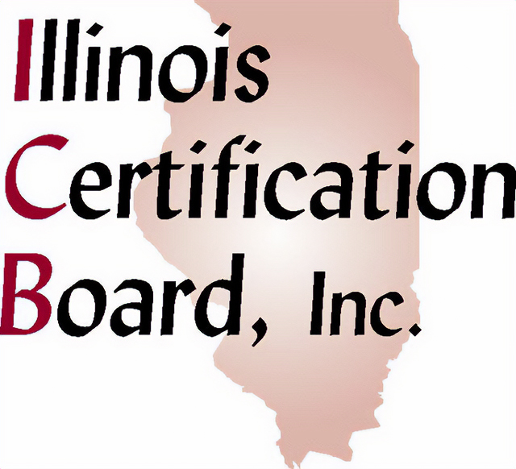
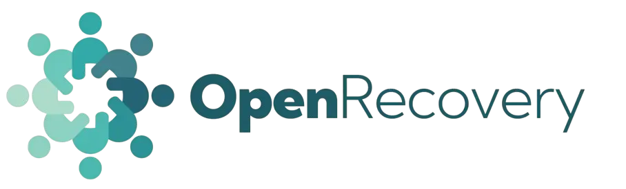
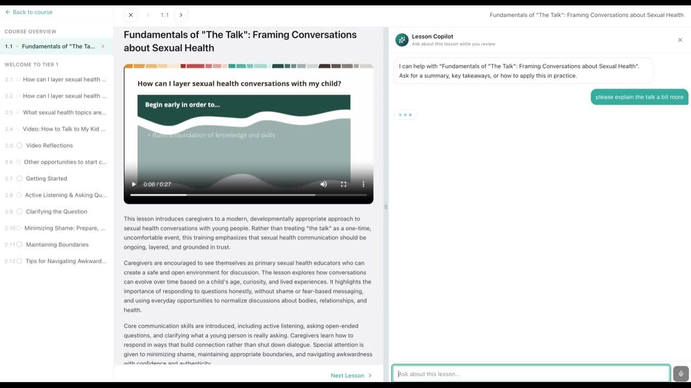

16 weeks
initial LMS build + first live module


Illinois Certification Board x OpenRecovery
AI-Enabled LMS + CPSW Training Launch (16 Weeks)
This 16-week Professional Learning Platform Activation Sprint is designed to help Illinois Certification Board launch a scalable, ICB-branded LMS and AI-supported learning environment, beginning with CPSW as the initial priority training.
Because CPSW is ICB’s most urgent near-term priority, OpenRecovery can begin there while building the LMS foundation in parallel, using existing CPRS/CRSS, ethics, and related materials where applicable as a basis for curriculum development.
The launch-first structure is a one-time implementation plus CPSW development, followed by either a recurring $2,000 per month per course fee or a revenue-share model once courses are live.
16 weeks
initial LMS build + first live module
$25k
customized LMS foundation
$40k-$65k
CPSW development range, final scope TBD
$2k/mo
per active course recurring option after implementation
Walkthrough Video
This walkthrough shows the proposed ICB-branded LMS, the CPSW-first learner flow, the embedded AI copilot, and the broader path from launch into future training expansion and recurring commercialization.
What It Shows
Why This Matters
The walkthrough makes the proposal concrete by showing what Phase 1 could look like as a real learner-facing product, not just a scope description.
What To Watch For
Watch for how the learner experience, AI support, launch path, and post-implementation commercial structure connect into one phased platform strategy.
Proposal Walkthrough
This Google Drive video covers the LMS foundation, CPSW launch, embedded AI copilot, and commercial structure options.
If the embed does not load, use the Drive link below.
Product Preview
These screenshots are included to show the kind of learner experience, embedded AI support, and assessment feedback layer that OpenRecovery can bring into the ICB training platform.


Executive Summary
Phase 1 is designed to launch a live, learner-facing LMS and AI-supported training environment now, while creating the foundation for future credential-related offerings over time.
Deploy the first operational version of ICB’s learner-facing LMS and AI support environment.
Build and QA the initial CPSW module using source materials and related references where applicable.
Finish with launch checkpoint, handoff, and a decision on monthly subscription or revenue share.
Sprint Objective
Deploy the first launch-ready version of ICB’s professional learning platform, with the branded LMS, embedded AI copilot, and CPSW training path ready for real use.
Why CPSW First
CPSW is the most urgent near-term opportunity, so the platform and module can be built in parallel without waiting for a broader multi-training roadmap to be fully defined.
Commercial Path
The first module is not a one-off build. It creates a reusable platform that can later support Ethics, Crisis, Supervisor, and either a $2,000 per month per course model or a revenue-share model.
Proposed Outcomes
By the end of Phase 1, ICB would have a branded learning platform, an AI-enabled learner support layer, a live CPSW path, and a foundation for future trainings and revenue opportunities.
Outcome 01
Launch a customized LMS with course, lesson, exercise, assessment, and administrative structure ready for real use.
Outcome 02
Give learners an AI copilot that can answer questions, provide guidance, and help build confidence across the training.
Outcome 03
Review and adapt source materials, use CPRS/CRSS, ethics, and related content as a basis where applicable, and build the first training inside the LMS.
Outcome 04
Use the same LMS foundation to support future trainings such as Ethics, Crisis, Supervisor, and other credential-related modules.
Outcome 05
Create a platform that can support new training revenue over time through either recurring subscription pricing or a revenue-share structure.
Engagement Phases
The first phase is a Professional Learning Platform Activation Sprint focused on launch readiness. The second phase adds future trainings once the platform and CPSW module are live.
Phase 1
Objective: deploy the first operational version of ICB’s learner-facing LMS and AI support environment, with the initial CPSW module built and launch-ready.
Phase 2
After launch of the initial LMS and CPSW module, OpenRecovery and ICB can expand the platform with additional trainings and credential-related modules.
Scope Of Work
The initial sprint focuses on the reusable LMS foundation, the first live CPSW module, AI-enabled learner support, and the work needed to make the launch operational.
Customized LMS foundation
Initial module build
AI-enabled learner support
Launch Preparation
Phase 1 also includes stakeholder review, QA, revisions, and administrative handoff so the first launch is operationally ready.
Future Scope
Future modules such as Ethics, Crisis, Supervisor, and other trainings can be added into the LMS after Phase 1 under separately scoped implementation or curriculum-development work.
Timeline
Phase 1 is organized as a structured activation sprint with clear workstreams across discovery, build, QA, launch preparation, and handoff. Additional trainings follow once the LMS is live.
Weeks 1-3
Discovery, artifact collection, CPSW priority confirmation, source material review, workflow mapping, and LMS structure design.
Weeks 4-8
LMS environment setup, branding, course structure build, lesson setup, AI copilot configuration, and CPSW curriculum adaptation and drafting.
Weeks 9-12
Exercise and assessment build, learner and admin testing, QA, stakeholder review, and content refinement.
Weeks 13-15
Launch preparation, final revisions, administrative review, launch-readiness validation, and stakeholder signoff.
Week 16
Launch checkpoint, administrative handoff, and Phase 2 planning with pricing review for future trainings.
Additional Trainings
Each additional training is estimated at 8 weeks, depending on source-material quality, review cadence, training length, content development needs, and video-production requirements.
Operational Rhythm
Weekly feedback and batched approvals keep content development, AI configuration, and product work moving in parallel.
Timeline Guardrails
Extensions caused by stakeholder scheduling delays or delayed material delivery are treated as customer-driven timeline adjustments.
Investment
Phase 1 includes one-time implementation and CPSW development costs. After launch, ICB can choose either a monthly per-course subscription structure or a revenue-share model.
LMS build / implementation
$25,000
Initial CPSW development
$40,000-
Additional trainings
$10,000
per training, plus material development TBD where needed
Option A
$2,000/mo/
Option B
As an alternative to the monthly per-course fee, OpenRecovery and ICB may structure the engagement as a revenue-share arrangement, with final terms defined based on course pricing, enrollment assumptions, launch scope, and go-to-market structure.
Recommended Commercial Structure
We recommend a launch-first structure: $25,000 one-time LMS implementation, $40,000-$65,000 CPSW development, then either $2,000 per month per course or a revenue-share structure once the course is live.
Optional Add-On
Delivery & Acceptance
The goal of the initial engagement is a functional deployment that ICB can review, validate, and use as the basis for next-step rollout decisions.
Delivered by end of initial engagement
Acceptance criteria
Implementation Considerations
A few practical decisions determine how quickly CPSW and future trainings can move from concept into a live learner experience.
Considerations
Exclusions
Next Steps
The immediate decisions are the first training, the Phase 1 build scope, and the post-launch commercial structure. From there, the team can move directly into artifact collection and platform design.
Step 1
Step 2
Step 3